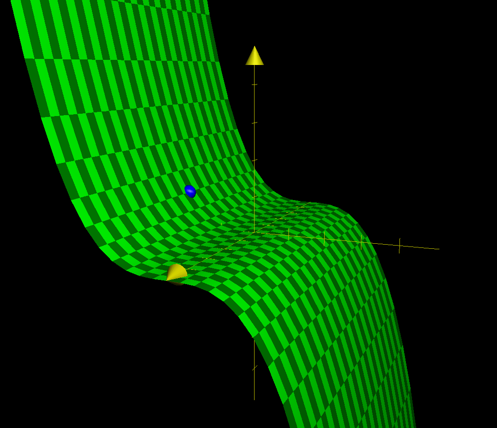

Backlinks
1 Roofs Number 3
One possible design for one side of the roof would be a simple cubic function; that:
\begin{equation} f(x,y) = \frac{1}{8} x^3 \{0 \leq x \leq 4, -5 \leq y \leq 5\} \end{equation}
1.1 Slope in Middle
The "middle" of the roof, therefore, is the location \((2,0)\), as indicated by the blue dot above.
Standing in the middle, and facing the "ridge" (\(+x\)) direction, we could calculate the slope of the roof.
The vector facing the ridge of the roof, to the positive \(x\) direction, is represented by
\begin{equation} \begin{bmatrix} 1 \\ 0 \end{bmatrix} \end{equation}the gradient of this function is represented by:
\begin{equation} \begin{bmatrix} \frac{3}{8}x^2 \\ 0 \end{bmatrix} \end{equation}Therefore, at the center point as indicated, the gradient is:
\begin{equation} \begin{bmatrix} 6 \\ 0 \end{bmatrix} \end{equation}Computing the dot product of the direction and the gradient as found, we arrive that — at the center — the slope is:
\begin{equation} \begin{bmatrix} 1 \\ 0 \end{bmatrix} \cdot \begin{bmatrix} 6 \\ 0 \end{bmatrix} = 6 \end{equation}Therefore, the slope as indicated is \(6 \approx 80.5^{\circ}\).
1.2 Facing the Peak
We first determine a vector that originates from the center of the roof, and facing towards one of the ridges; that:
\begin{equation} \begin{bmatrix} 4 \\ 5 \end{bmatrix} - \begin{bmatrix} 2 \\ 0 \end{bmatrix} = \begin{bmatrix} 2 \\ 5 \end{bmatrix} \end{equation}Normalizing this vector, we arrive at:
\begin{equation} \begin{bmatrix} \frac{2}{\sqrt{29}} \\ \frac{5}{\sqrt{29}} \\ \end{bmatrix} \end{equation}We will then project the gradient at the center point atop this vector:
\begin{equation} \begin{bmatrix} \frac{2}{\sqrt{29}} \\ \frac{5}{\sqrt{29}} \\ \end{bmatrix} \cdot \begin{bmatrix} 6 \\ 0 \end{bmatrix} = \frac{12}{\sqrt{29}} \end{equation}Therefore, the slope as indicated is \(\frac{12}{\sqrt{29}} \approx 65.83^{\circ}\).
1.3 Maximizing the Angle
To face in the steepest direction, we will need to face the direction of the gradient. As the gradient is
\begin{equation} \begin{bmatrix} 6 \\0 \end{bmatrix} \end{equation}as derived above, the direction of the gradient is therefore:
\begin{equation} \begin{bmatrix} \frac{6}{6} \\0 \end{bmatrix} = \begin{bmatrix} 1 \\0 \end{bmatrix} \end{equation}2 Spinning Coffee Cups
2.1 Deriving Velocity
The process of acceleration is modeled by the following expression:
\begin{equation} a(t) = -3 cos(t)\hat{i} - 2 sin(t) \hat{j} + 0 \hat{k} \end{equation}We begin by taking an indefinite integral in each component to result in the expression for velocity.
\begin{align} \int a(t) dt &= \int -3 cos(t)\hat{i} - 2 sin(t) \hat{j} + 0 \hat{k}\ dt \\ &= (-3 sin(t) + C_1) \hat{i} + (2 cos(t) + C_2) \hat{j} + C_3 \hat{k}\ dt \end{align}Though this expression, we supply the base state \((0,2.1,1)\) at \(t=0\) to solve for the constants.
\begin{equation} (0, 2.1, 1) &= C_1 \hat{i} + (2+C_2) \hat{j} + C_3 \hat{k}\ \end{equation}Therefore, we could deduct that \(C_1 = 0\), \(C_2 = 2.1\), \(C_3 = 1\). Hence:
\begin{equation} v(t) &= (-3 sin(t)) \hat{i} + (2 cos(t) + 0.1) \hat{j} + 1 \hat{k} \end{equation}We could proceed to graph this expression:
f(t) = (-3*sin(t), 2*cos(t)+0.1, 1) parametric_plot(f, (t, -5, 5), thickness=5)

2.2 Deriving Position
The process of position is the indefinite integral of the velocity expression:
\begin{align} \int v(t) dt &= -3 sin(t) \hat{i} + (2 cos(t) + 0.1) \hat{j} + \hat{k}\ dt\\ &= (3cos(t)+C_1) \hat{i} + (2 sin(t) + 0.1t + C_2) \hat{j} + (t + C_3) \hat{k} \end{align}Again, we supply the base state \((3,0,12)\) at \(t=0\) to solve for the constants.
\begin{equation} (3,0,12) = (3+C_1) \hat{i} + C_2 \hat{j} + C_3 \hat{k} \end{equation}Therefore, we deduct that \(C_1=0\), \(C_2 = 0\), \(C_3 = 12\). Hence:
\begin{equation} x(t) = 3cos(t) \hat{i} + (2 sin(t) + 0.1t ) \hat{j} + (t + 12) \hat{k} \end{equation}We could proceed to graph this expression:
f(t) = (3*cos(t), (2*sin(t)+0.1*t), t+12) parametric_plot(f, (t, -5, 5), thickness=5)

3 Optimizing a Function
Optimizing a function \(h: \mathbb{R}^2 \to \mathbb{R}^2\) requires maximizing-minimizing various dimensions of output. It is possible to optimize along a direction — thereby turning the problem onto one which involves the optimization of two functions \(\mathbb{R}^2 \to \mathbb{R}^1\). Or, it is possible to optimize the magnitude.
3.1 Optimizing Along a Dimention
For optimizing the output along \(\hat{i}\), we create an expression \(g:\mathbb{R}^2 \to \mathbb{R}^1\) such that:
\begin{equation} g(x,y) = (x^2-2y+7) \end{equation}Taking all the first and second derivatives of this expression, therefore, would be:
\begin{align} g_x = 2x \\ g_y = -2 \\ g_xx = 2 \\ g_yy = 0 \\ g_xy = 0 \end{align}Evidently, there is no zeros in \((g_x, g_y)\), meaning there are no minima or maxima in this dimension. Optimizing in the other dimention would follow the same procedure.
For optimizing along \(\hat{j}\), we repeat the same procedure. We create an \(f: \mathbb{R}^2 \to \mathbb{R}^1\) such that:
\begin{equation} f(x,y) = x^2 + y^2 \end{equation}Taking, again, all derivatives of this expression:
\begin{align} f_x = 2x \\ f_y = 2x \\ f_{xx} = 2 \\ f_{yy} = 2 \\ f_{xy} = 0 \end{align}We could see that, at \((0,0)\), \(\nabla g = 0\). Applying the second partial derivative test at this point, we deduct that:
\begin{equation} h = 4 - 0 = 4 \end{equation}As \(h\) is positive, and both \(f_{xx}\) and \(f_{yy}\) is positive, we deduct that the point \((0,0)\) is a local minimum in the \(\hat{j}\) dimension.
3.2 Optimizing for Magnitude
The magnitude of the output space of this function, therefore, is:
\begin{equation} |h(x,y)| = \sqrt{(x^2-2y+7)^2 + (x^2 + y^2)^2} \end{equation}Of course, we could see that, as the output of the square root function is always positive, optimizing this function would be functionally the same as optimizing for \((x^2-2y+7)^2 + (x^2 + y^2)^2\).
We first expand this expression by expanding all squares of expressions:
\begin{equation} 2x^4 + 2x^2y^2 + y^4 - 4x^2y + 14x^2 + 4y^2 - 28y + 49 \end{equation}We then proceed to optimize a function \(g: \mathbb{R}^2 \to \mathbb{R}^1\) defined by this expression using the traditional second partial derivative test:
\begin{equation} g(x,y) = 2x^4 + 2x^2y^2 + y^4 - 4x^2y + 14x^2 + 4y^2 - 28y + 49 \end{equation}To begin with this task, we first take the first and second partial derivatives of this expression:
\begin{align} g_x &= 8x^3 + 4xy^2 - 8xy + 28x \\ g_y &= 4x^2y + 4y^3 -4x^2 + 8y - 28 \\ g_{xx} &= 24x^2 + 4y^2 -8y +28\\ g_{yy} &= 4x^2 + 12y^2 + 8 \\ g_{xy} &= 8xy - 8x \end{align}To figure the critical points of this expression, we must solve for all values such that:
\begin{align} 8x^3 + 4xy^2 - 8xy + 28x &= 0 \\ 4x^2y + 4y^3 -4x^2 + 8y - 28 &= 0 \end{align}Leveraging the first expression, we hold \(x\) constant and solve a quadratic expression in \(y\):
\begin{equation} y = \pm \sqrt{ -2x^2 - 6 } +1 \end{equation}Substituting this expression for \(y\) onto that below for \(x\), we derive an expression in \(x\) for the zero.
\begin{equation} \pm 4x^2(\sqrt{ -2x^2 - 6 } + 1) \pm 4(\sqrt{ -2x^2 - 6 } +1)^3 -4x^2 \pm 8 (\sqrt{ -2x^2 - 6 } +1) - 28 &= 0 \end{equation}At this point, we could solve for expressions for \(x\) for each combinations of \(\pm\) to figure critical points, then apply the second derivative test to figure the optimized points of magnitude. However, this expression, per discussion, is computationally much complex to optimize.